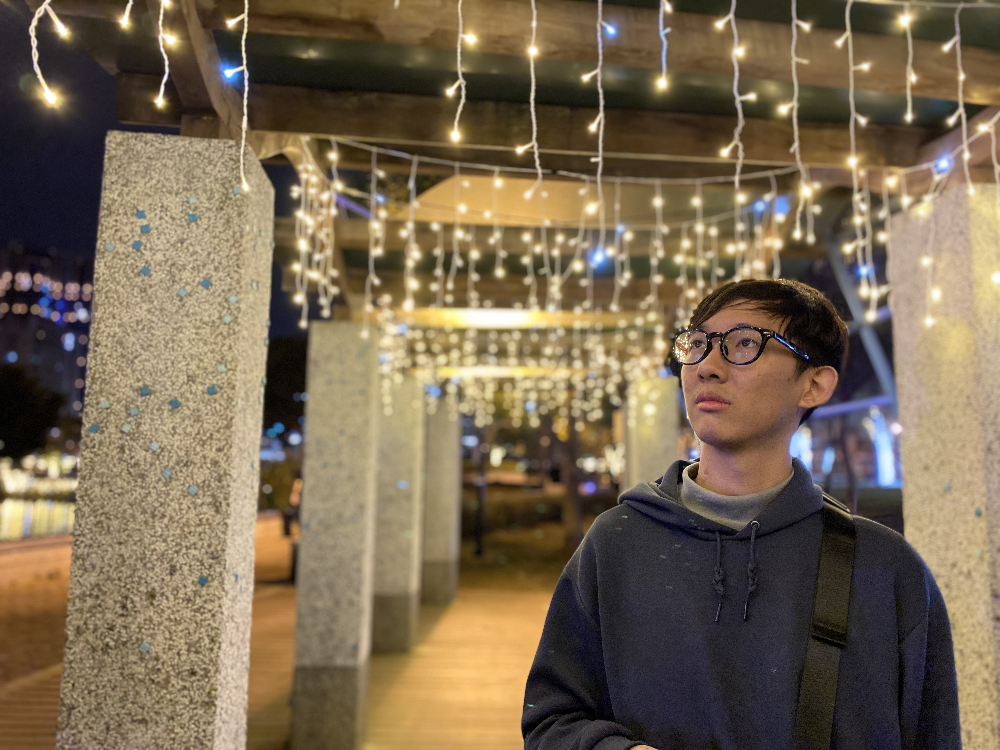

1.兩百字內的個人簡介。

我叫陳聖鎧，今天28歲。畢業於中國醫藥大學營養系。曾在團膳公司任職，而後因覺得職場發展不佳離職。
離職後嘗試報考公職，但讀書過程不太順利。今年一月考完試後，在等待放榜的期間思考自己未來的可能性，開始查找網路自學程式語言的相關資料。因緣際會在Youtube看見大學社團的鄭羽筑學姊的受訪影片而知道WeHelp，開始上彭彭老師在YT上的公開課程，也在學習寫程式的過程中找到成就感，從而興起想要進入WeHelp接受訓練的想法。
2.為了成為軟體工程師，做過什麼努力？若有具體作品請分享給我們。
目前都是利用網路上的資源進行自主學習。在參考了各種與程式語言相關的影片後，選擇先上了YouTube一位孔令傑教授的基礎C++課程，想先了解程式碼運作上比較底層的基本邏輯，像是跟記憶體有關的指標等等。而後觀看彭彭老師的前端基礎課程、Python的基礎課程，同時也有購買一位Youtuber的JS課程，嘗試著跟著他做出幾個簡單的project，同時在製作過程中一邊查找網路資料學習。
1: 自己嘗試製作的一個簡單網頁遊戲：
猜數字。
2: 跟著另外的課程製作的project：
Cat search。(這個搜尋用起來會有BUG，詢問過那位Youtuber，應該是API的搜尋邏輯有問題)
3.如果參與這個訓練，會怎麼安排學習時間？
目前非在職工作者，白天多在圖書館中使用筆電自學到晚上才回家，如果參與訓練，每週預計安排六天、每天8-10個小時的時間學習。
程式語言的學習讓我覺得，跟玩遊戲有點像。要學會所有的基礎知識(就像遊戲的基本規則、基本招式)，而在實作時，要利用這些技能、招式，去達成自己的目標(就像如何打倒敵人)，每個人都能有自己的想法去解決問題，讓我覺得這方面的學習十分有趣。
4.是否有想要加入的公司？為什麼想加入該公司？
沒有。
以前並非相關產業出生，對於有什麼公司、哪間公司比較好沒有概念。而我個人的理念是，與其花時間研究公司好壞，不如先充實自己，只有自己的程度到了，才能是我選擇加入什麼公司，而不是被公司選擇。
但是我也知道，明白自己想做什麼而後訂立目標學習是很重要的。雖然沒有想加入的公司，但在了解相關資料，及自己上了一點基礎課程後，目前對於成為「後端工程師」較有興趣。希望能在了解前端所必須具備的知識後，往後端去加強學習。
5.請描述一件產生明顯負面情緒的經歷，如何處理該情緒？
以前我的工作要跟國小的午餐秘書協調學童營養午餐的菜色，而後進行叫貨，將食材送至該學校給該校的廚師烹煮成午餐。
有一次經歷是，我的叫貨單寫的品項，和公司的運輸司機送至學校的品項不同。學校午餐秘書就打來電話指責我，我站在公司的立場不能撇開責任，只能跟學校解釋並道歉。那次令我印象深刻，因為我是窗口，錯不在我但是卻是我來承受指責，當下的負面情緒差點把我逼哭。
後來是將事情轉達給經理，由經理代表公司跟學校方道歉，並跟運輸組協調如何避免事情再發生。我自己的情緒就是跟同事抱怨，下班回家跟家人抱怨，然後晚上睡一覺，隔天還是正常去上班。我自己是有人能聽我念一念，然後睡一個晚上，就會好轉很多的性格。
6.關於這份申請網頁，分享一個開發時的技術心得。
我覺得我對網頁架設3大核心的學習比例有點錯誤。除了彭彭老師的課程，還有另外上別的youtuber的JS課，但是在真的要設計這份申請網頁時，對於CSS的不熟悉是增加我作業時長的主因。排版position的運用、動畫transition的使用語法、opacity影響的層級，都是一邊做一邊查資料。
接下來我打算多花一點時間更了解CSS、學習框架，再繼續加強後端python、mySQL的部分。
7.請用簡短兩三句話，描述對你而言，最重要的一項人際交往原則。
每個人的想法都有他的道理，要試著轉換身分、多面向去思考，而不是以自己的理解、立場去批判他人。
8.從上次提出申請至今，多做了哪些努力？( 第一次申請不用回答 )
第一次申請。
9.其他想要對我們說的事情？
第一就是，要謝謝彭彭老師，不論WeHelp結果如何，老師在youtube上的教學影片已令我收穫很多，不管有沒有被選到，還是會繼續學習程式語言。希望WeHelp可以給我這個機會，我會全力投入在這個訓練之中，盡自己所能努力完成目標。